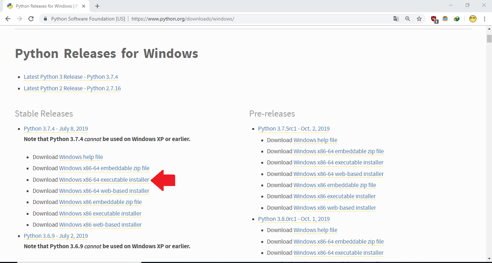
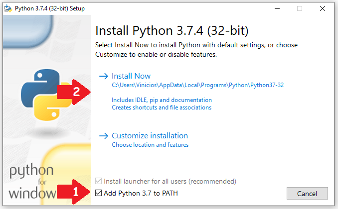
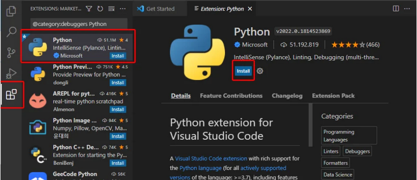

Para instalar o Python no seu sistema operacional Windows, você precisa baixar o instalador. Acesse o site oficial neste link e procure o instalador de 64 bits, como abaixo

Faça o download do instalador executável do Windows e clique duas vezes nele para iniciar o assistente de instalação do python como mostrado abaixo.

O processo de instalação é bem simples.
1. Marque a opção "Add Python to PATH"
2. Clique em "Install Now"
3. Se tudo correr bem, clique em "Close"
Muito provavelmente o Python já está instalado para você. Tudo certo!
Visual Studio Code é um editor de texto voltado para programação.
A instalação no Windows é relativamente simples, basta acessar o site oficial do Visual Studio Code e fazer o Download da sua última versão, clicando no botão "Download for Windows".
Em seguida, execute o instalador baixado e siga as instruções na tela, não esqueça de marcar a opção "Add to Path" para adicionar o Visual Studio Code nas variáveis de ambiente.
A instalação no Mac é relativamente simples, basta acessar o site oficial do Visual Studio Code e fazer o Download da sua última versão, clicando no botão "Download for Mac".
Abra o instalador e copie o Visual Studio Code para a pasta Applications do seu Mac e pronto.
(Essas instruções servem para distribuições baseadas em debian, como o Ubuntu e o Mint)
A instalação no Linux é relativamente simples, basta acessar o site oficial do Visual Studio Code e fazer o Download da sua última versão, clicando no botão "Download for Linux".
Como resultado do Download você terá um pacote .deb na pasta Downloads. Abra um terminal, navegue até a mesma e execute o seguinte comando:
sudo apt install ./ARQUIVO_BAIXADO.deb
Pronto, a instalação do Visual Studio Code está realizada e ele já deve aparecer no menu de aplicativos para você.
As extensões são como uma espécie aplicativos complementares instalados dentro do VSCode que nos permite acesso a funcionalidades extra.
Com o visual studio code aberto, pressione
Ctrl+Shift+X ou localize o ícone de extensões no menu
lateral à esquerda. Em seguida, pesquise "Python" e instale a
primeira opção

Última modificação: 08-03-2023